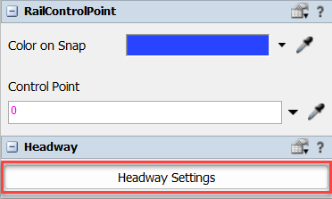
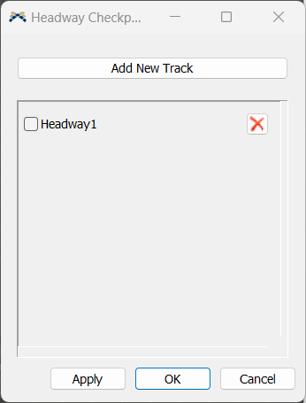
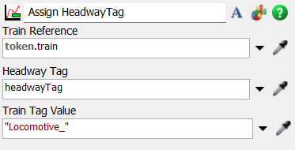
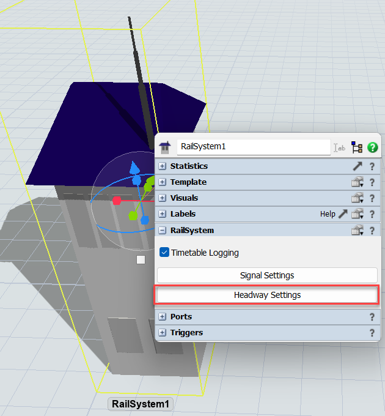
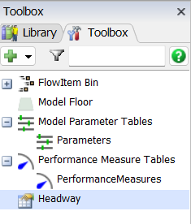
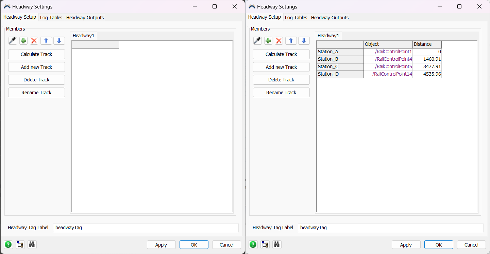
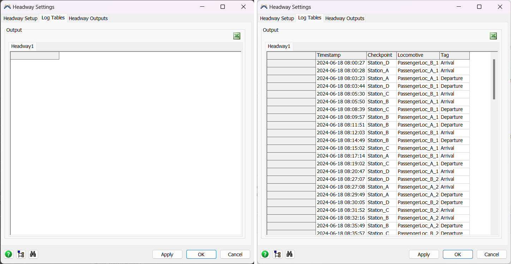
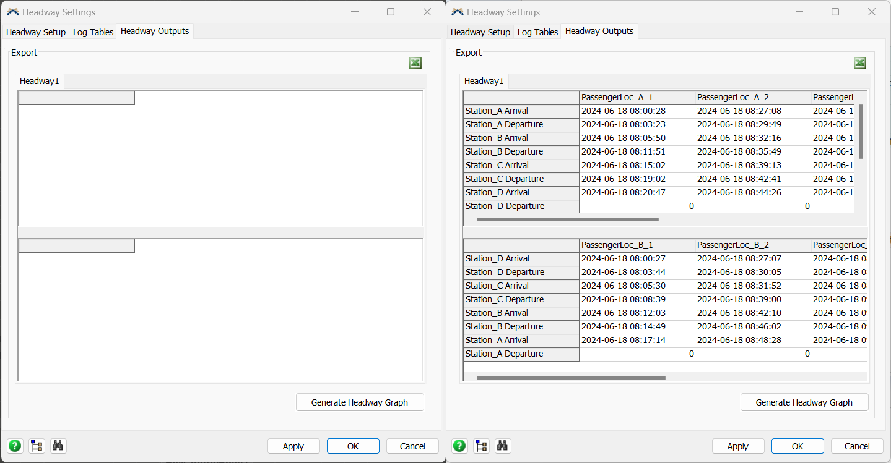
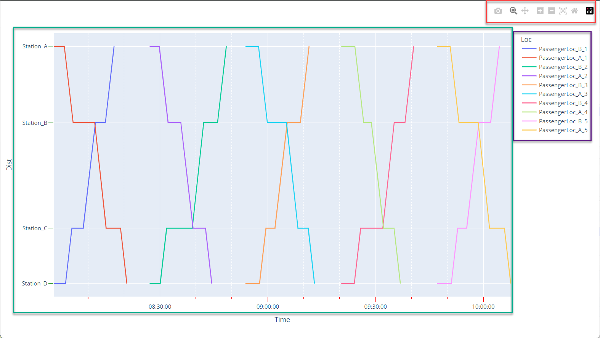

Headway is the difference in distance or time between two trains. This measure can help to find the shortest distance or time from one train to another to ensure a safety distance to avoid collisions called minimum headway. It is important to find a balance to not affect negatively the capacity of the track but guarantee enough distance to a train to safely brake.
The headway feature available in FlexSim RailWorks joins 3D objects and ProcessFlow activities to collect time data from the simulation, populating three output tables and then giving the option of generating a headway graph.
The RailControlPoint will be used as a headway object. It will represent checkpoints to collect the time each locomotive pass on it. For a RailControlPoint be considered a checkpoint, it must be added on the Headway Settings panel on the Rail System or using the panel on it:


This activity will assign the headway tag (by default "HeadwayTag") to the referenced train and associate a value that will represent the train on the headway output. The trains without this tag Will not trigger the collection of data that creates the tables and graph.

Train Reference: Sets the reference to the leading locomotive of a composition.
Headway Tag: Sets the tag to which the headway system will look for.
Train Tag Value: Sets the name for the train which will be shown on the headway outputs.
To configure the Headway system, it is done on the headway setting panel located on the Rail System or accessed through the Toolbox (it is necessary to have the Rail System created).


On the tab Headway Setup, there is the option of adding and removing Rail Control Points as checkpoints. As they are added, they will show on the table on the right. The Calculate Track button, automatically calculates the distance among the checkpoints. It will follow the order of the checkpoints on the table, therefore it is important to organize them for the correct values. The distance can also be added manually by editing the field "Distance". The name of the checkpoint can also be edited to better represent the model.
The button "Add new Track" will add new headway tables that can represent different tracks of the system. The button "Delete Track" will delete the currently selected headway. You can also rename the headway.
By default, the headway tag to identify which locomotives will collect the timestamps is "headwayTag".

One of the outputs of the headway feature is the log table. This table will contain all the arrives and departures of tagged trains, as well as the timestamps and the checkpoints.

The Headway Outputs tab is comprised of two tables. The first one is organized considering the travel from start of the track (The checkpoint considered the start) to the checkpoint considered the final one. While the second one, shows the timestamps of travels from the final checkpoint to the start one.
Both tables are configured similarly: Lines are the timestamps of arrivals and departures, while columns are the tagged trains.

All three tables available can be exported to Excel clicking on the Excel button.
After the simulation is done and all the tables are created, there will be available to generate a headway graph on the Headway Outputs tab. It will use all the data accumulated on the output tables and open a dynamic graph on browser and also save it on a HTML file.
The graph generated bellow is an example of a headway graph. On the red rectangle, there are the option of zoom in/out, reset the graph scale, save as PNG, move the graph. On the purple area is the legend and also clicking on the trains name can hide or show the lines. And lastly interacting on the graph itself (green rectangle) is possible to focus on a section, move the axis.
